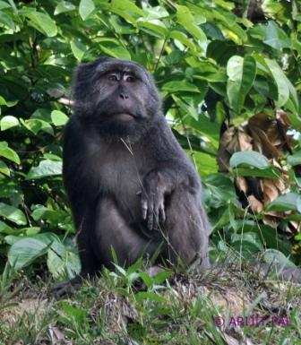
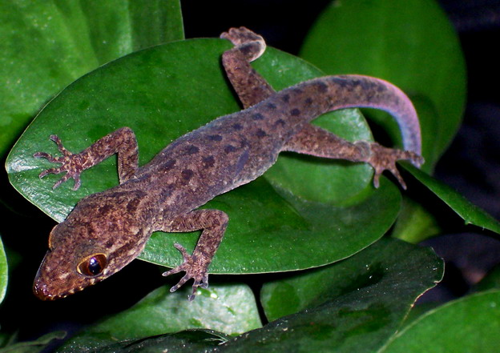
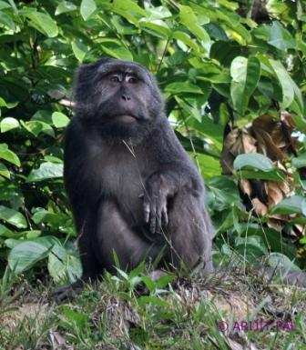
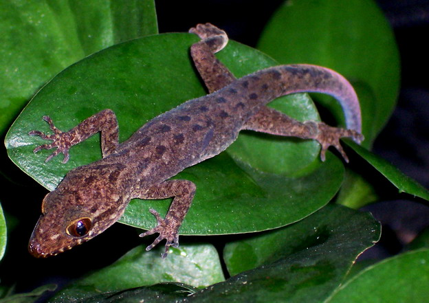

General Information
Clyde Island is one of the smaller islands located in the Andaman and Nicobar Islands, a group of
islands at the southeastern edge of the Bay of Bengal in the Indian Ocean. The Andaman and Nicobar
Islands are an Indian Union Territory, and they consist of a total of 572 islands, only a few dozen
of which are inhabited.
Clyde Island is situated near the southern end of the Andaman Islands and is part of the Nicobar
district. The island is known for its natural beauty, and it is a popular destination for
ecotourism. Its beaches are pristine and untouched, and its coral reefs are home to a variety of
marine life, including colorful fish, turtles, and dolphins.
Access to Clyde Island is restricted due to its remote location and to protect its fragile
ecosystem. Visitors to the island require a permit from the Indian government. The island is also
home to the Nicobar megapode, a rare bird species that is listed as vulnerable by the International
Union for Conservation of Nature (IUCN).
History
The history of Clyde Island and the Andaman and Nicobar Islands dates back thousands of years. The
islands were first settled by indigenous people, who are believed to have migrated to the islands
from Southeast Asia. These indigenous people are collectively known as the Andamanese, and they have
a unique culture and language.
In the late 18th and early 19th centuries, the islands were colonized by the British, who
established a penal colony there. The British brought prisoners from India and Southeast Asia to the
islands, where they were forced to labor in harsh conditions. The penal colony was known for its
brutality, and many prisoners died from disease, starvation, and mistreatment.
During World War II, the islands were occupied by the Japanese, who used them as a military base.
The Japanese carried out a brutal campaign of violence and forced labor, and many islanders were
killed or forced to work for the Japanese.
After the war, the islands were returned to British control, and they became part of independent
India in 1947. Today, the islands are governed by the Indian government and are a popular tourist
destination. The indigenous people of the islands continue to face challenges, including
discrimination and encroachment on their land and resources. Efforts are underway to protect their
rights and preserve their culture and way of life.
Geography
The Andaman and Nicobar Islands are located in the southeastern part of the Bay of Bengal, to the
east of the Indian mainland. The archipelago consists of 572 islands, of which only 37 are
inhabited. The islands are divided into two groups - the Andaman Islands to the north and the
Nicobar Islands to the south.
Clyde Island is part of the Nicobar group of islands and is located towards the southern end of the
group. The island is relatively small, with a total area of just over 5 square kilometers. It is
mostly covered in dense tropical forest, and its coastline is characterized by rocky outcrops and
pristine beaches.
The Nicobar Islands are surrounded by coral reefs, which are home to a diverse array of marine life,
including colorful fish, turtles, and dolphins. The islands also have a number of rivers and
streams, which flow through their dense forests and provide important habitats for a variety of
wildlife, including rare bird species like the Nicobar megapode.
The islands have a tropical climate, with high temperatures and humidity throughout the year. The
monsoon season, which lasts from May to October, brings heavy rainfall to the islands. The islands
are prone to natural disasters, including earthquakes and cyclones, which can cause significant
damage to the local infrastructure and economy.
Wildlife
The Andaman and Nicobar Islands are home to a rich and diverse array of wildlife, with many species
found nowhere else in the world. The islands' isolation and varied habitats, which include dense
tropical forests, coral reefs, and mangrove swamps, have led to the evolution of unique flora and
fauna.
The Nicobar Islands, including Clyde Island, are particularly known for their rich biodiversity. The
islands are home to several endemic species, including the Nicobar megapode, a bird that lays its
eggs in the sand, and the Nicobar tree shrew, a small, arboreal mammal. Other rare and endangered
species found on the islands include the Nicobar scrubfowl, the Nicobar pigeon, and the Nicobar
long-tailed macaque.
The waters around the islands are also home to a diverse array of marine life, including several
species of sea turtles, dugongs, dolphins, and whale sharks. The coral reefs surrounding the islands
are some of the most biodiverse in the world, with over 1,200 species of fish and 200 species of
coral.
Efforts are underway to protect the islands' rich biodiversity and to promote sustainable tourism
that benefits both the local communities and the environment. The Indian government has designated
several protected areas on the islands, including national parks and wildlife sanctuaries, to
conserve the islands' unique flora and fauna.
 


